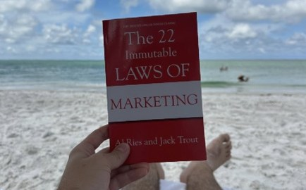
Denken.
Creative Strategy
Angles, scripts en concepten gebouwd op wat converteert in paid.
Teun's Creative Pod
Maar creative fatigue blijft (helaas) voor altijd bestaan.
Werk daarom met The Creative Pod: een doorlopende creatieve groeimotor voor D2C-merken: strategie, creatie en merkbouw in één pod.
Plan een kennismakingFounder & Creative Strategist
Teun is een creative concept creator, strategist, video director, editor en marketeer, iemand die het liefst op het snijvlak van idee en resultaat werkt.
Waarom hij dit doet? Omdat hij gelooft dat creatie het verschil maakt tussen merken die schreeuwen om aandacht en merken die 'm verdienen. Een goed idee, scherp uitgevoerd, verslaat elk mediabudget.
Die overtuiging bracht hem van video's regisseren en edits draaien naar het aansturen van complete groeistrategieën voor D2C-merken. The Creative Pod is de volgende stap: een compact team dat denkt, maakt, bouwt en spart als verlengstuk van jouw merk.
My best place to think? Outside of the box.
Werkte met o.a. Poopy en Mother's Earth — sinds 2023.
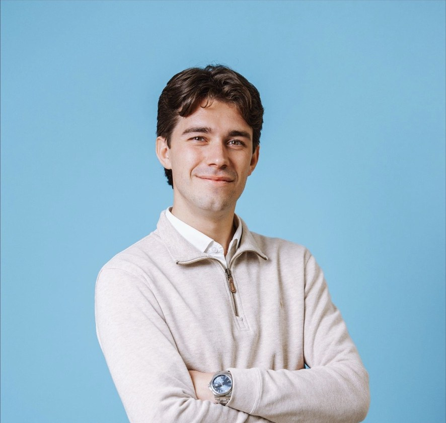
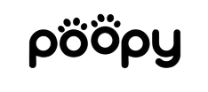
Twee jaar lang werkte Teun als CMO bij Poopy: hij zette de richting voor strategie, creatie, productie, retention marketing en branding, en bouwde het marketingteam van 0 naar 10+ mensen. Van €0 naar €3.5M jaaromzet, in 18 maanden. Van NL naar heel Europa.
Paid & social creative partner sinds 2024.
Alles wat we doen, voedt hetzelfde systeem: paid brengt nieuwe oogballen binnen, en sterke creatie en branding zetten die aandacht om in een merk dat blijft verkopen.

Creative Strategy
Angles, scripts en concepten gebouwd op wat converteert in paid.
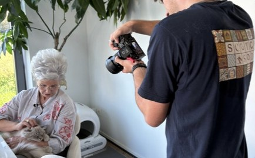
Production
Shoots, edits en static design publicatieklaar.
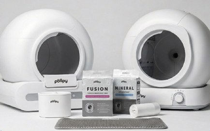
Branding
Een merk dat blijft hangen, premium mag prijzen en klanten laat terugkomen.
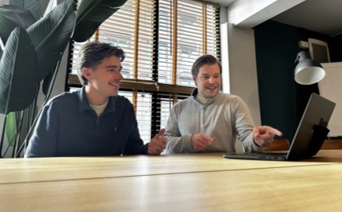
DTC Consulting
Launches, listicles, one-offs, offers, seasonal campaigns, en funnel-brede strategie.
Kennismakingscall met creative audit van je ad library, site en huidige creatives.
Concreet plan, heldere afspraken, tekenen.
Merk, doelgroep, doelen en tone of voice scherp via de Creative Onboarding.
Een creative testing framework op basis van je onboarding-antwoorden & onze research.
Angles en formats gekoppeld aan je funnels.
Scripts met ingebouwde feedbackrondes.
Talent, locatie en regie geregeld.
Elk video concept met 3 variaties. Altijd.
Maximaal twee feedbackrondes, dan publicatieklaar in jouw specs.
Learnings terug de creative strategy-loop in.
Stap 10 voedt stap 6: elke ronde creatives wordt slimmer dan de vorige.
Een greep uit de video's: van high-production tot creatieve social-first sketches met rappers en collabs met bekende dierenartsen.
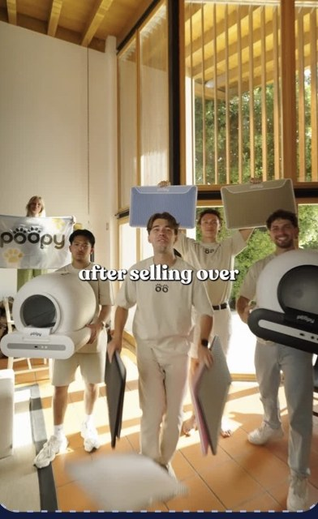
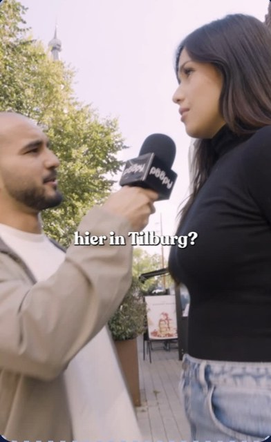
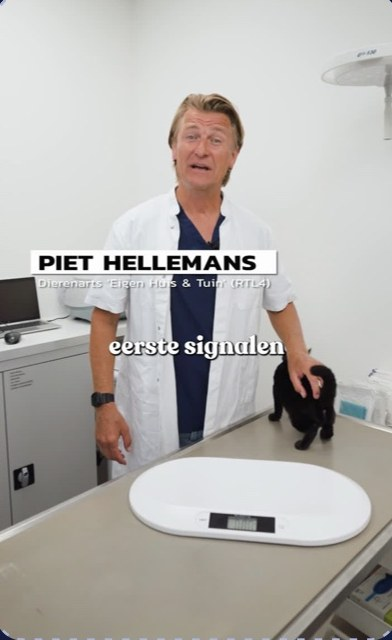
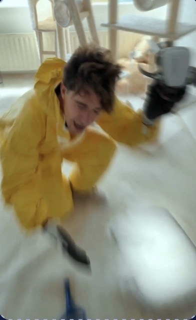
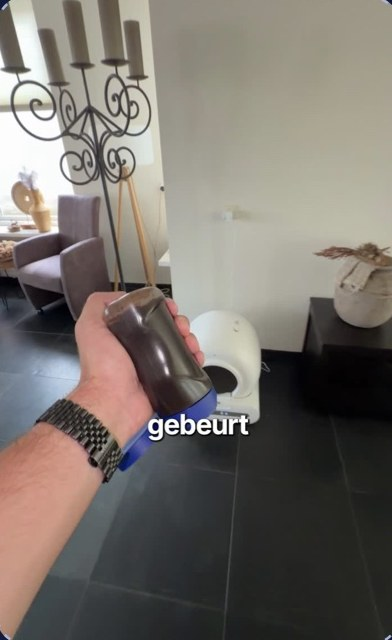
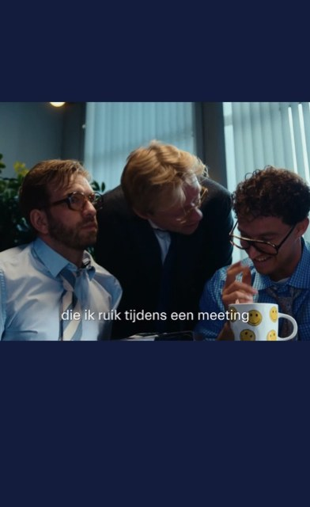

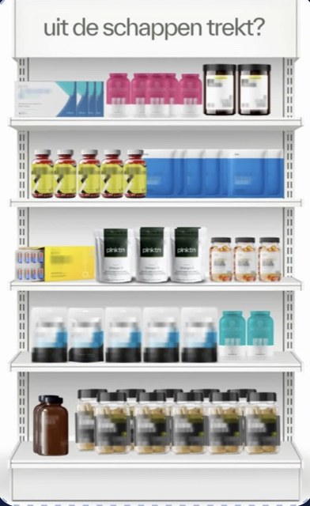
Het begint met het testen van de format en de messaging, bij goed resultaat wordt er gevarieerd in hook, VO, messaging, en visuals.
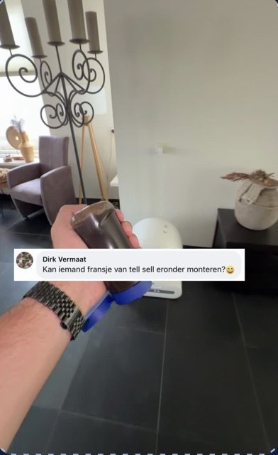


Winning format, dus variatie op visual, messaging & language. Angles gebaseerd op problem aware google search volume.
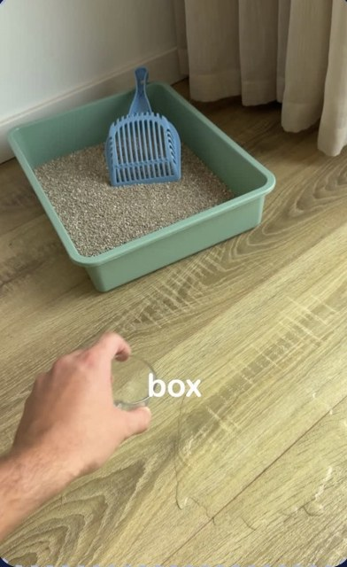
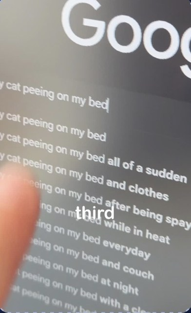
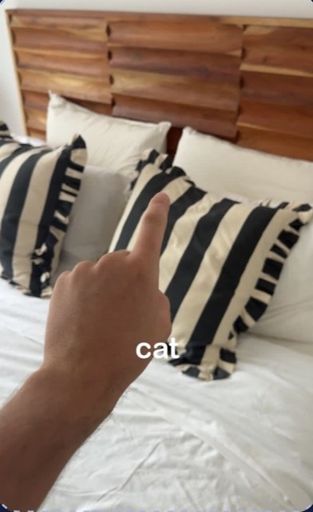
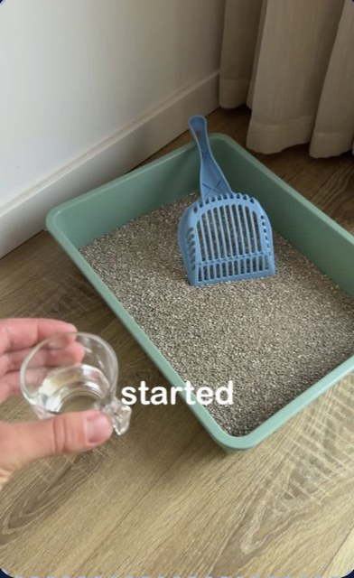
Hook variations

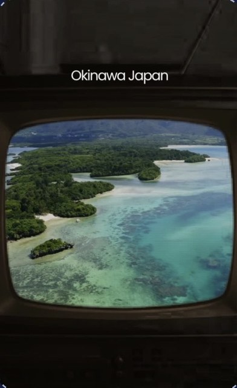
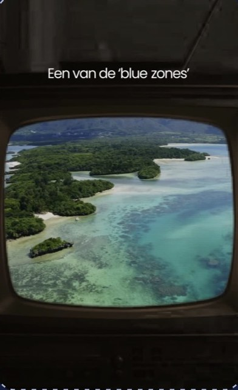
Geen mooie praatjes, dit is hoe het eruitziet in de ads manager.
Cijfers uit echte campagnes. Wegens privacy geanonimiseerd.
Volledige producties met vaste scope en vaste prijs. Ideaal als je precies weet wat je nodig hebt.
Alleen de strategie en scripts — van Teun zelf, zonder productieteam. Voor merken met eigen productie.
One-off of retainer
Teun blijft persoonlijk verantwoordelijk voor strategie en klantcontact. Uitvoering ligt bij een vast team, aangestuurd door Teun zelf.
Ofwel: Teun is je vaste contactpersoon en creatieve motor, die zorgt dat een team van creatievelingen de visie tot leven brengt zonder hoofdpijn voor jou.
We starten met een onboarding-call en een creative audit van je huidige beeldbank en advertising creatives.
Plan een kennismakingTeun Wientjens · The Creative Pod